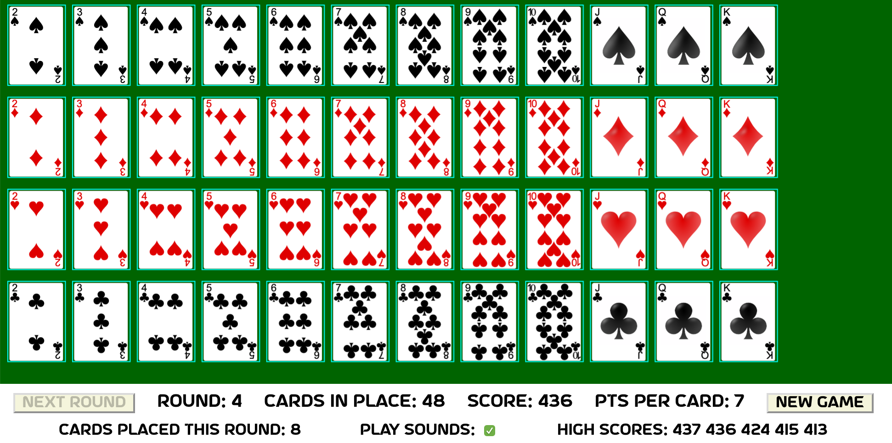
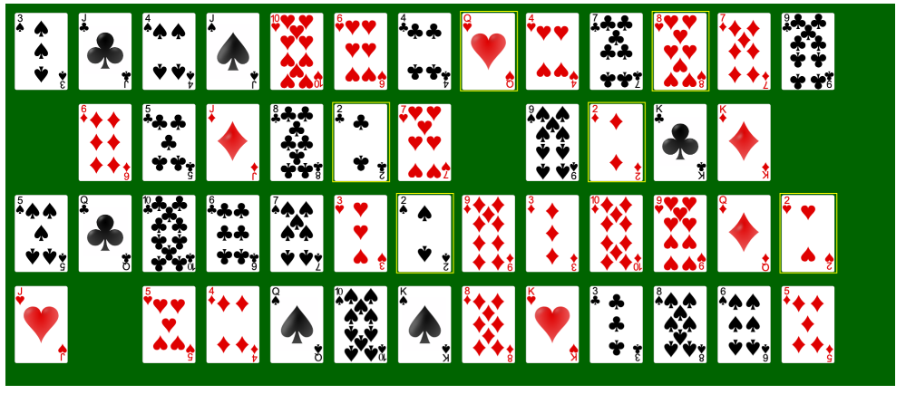
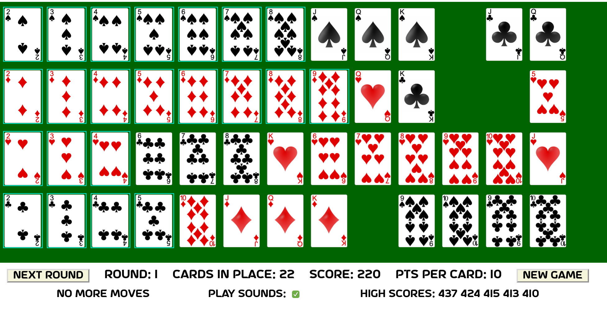

The goal is to line up the cards by suit from 2 through King, left to right, with the 2s all in the first column, 3s in the second column, etc.
Here is a sample of what a completed game looks like:
Note that the suits can be in any order -- you do not have to have spades in the top row, diamonds in the 2nd row, etc., as in the image above.
When the game starts, all 52 cards are played out, and the Aces are removed, leaving 48 cards and 4 "holes". A hole can be filled only by playing the card that is the same suit, but one number higher than the card to the left of the hole. E.g., in the image below, you see a hole to the right of the Jack of Hearts. The only card that can be played there is the Queen of Hearts. Also, there is a hole to the right of the 7 of Hearts. The only card that can be played there is the 8 of Hearts. Thirdly, there is a hole in the first column: any 2 can be played there. Finally, there is a hole to the right of the King of Diamonds. That hole is "dead" -- nothing can be moved there.
To help you find cards that can be moved, they are highlighted by having a yellow box around them. That is why all the 2s on the board are highlighted -- any of them can be moved to the empty spot in the first column.
Once a card is in its correct place, the card will get a blue border drawn around it. E.g., if you click on the 2 of Diamonds in the game above, it will move to the 1st column, and will have been "placed", and you will receive points for its correct placement. The goal then will be to get the 3 of Diamonds to its right, etc.
The order in which you choose to move cards makes all the difference. You do not want to leave holes behind Kings. Once all the holes end up behind Kings, the round is done (see image below). You can click Next Round, to have the "unplaced" cards reshuffled and put back on the board, and continue your game. The game is over when you have successfully placed all the cards in order from left to right.
If you want to figure out where/if you can move a card, you can click on it, and the card that is one number lower than it will "bounce". Then, you can click on the card to the right of it, and found out where it would have to be moved, by watching for the next card to bounce. Click on the card to the right of that to continue.
You receive 10 points for each card that is successfully placed in Round 1, 9 points for each card placed in round 2, 8 points for round 3, etc. The maximum score is 480 -- you successfully placed all cards in order in the first round!
An excellent score is any score above, say, 420. A very good score is anything above 375. Poor scores are in the 200s.
The code is written in Python. This code was initially written by me as a way for me to learn how to build GUIs using Python, so I could teach my students how to do it. Thus, the GUI portion was implemented with Tkinter.
Our Computer Science department is now considering alternatives to Tkinter, as its capabilities are somewhat limited -- there is no good way to play sounds, and Tkinter does not support an alpha channel, so images/drawings cannot be partially opaque/transparent.
Thus, this Christmas vacation, I decided to experiment with alternatives to Tkinter, and discovered Brython, which allows you to write Python code that runs in a web browser. My next implementation of Frustration Solataire used Brython, and the native HTML5 canvas.
(One very nice thing is that I implemented the game initially using the Model-View-Controller pattern, so all of the logic of the game is separated from the display/GUI code. Thus, when I ported the game over from Tkinter to Brython, I didn't have to change any of the code logic!)
After implementing the game in Brython on the "raw" HTML5 canvas, I found that drawing on the canvas left some "bitrot" visible because of anti-aliasing. Thus, I turned to Fabric JS, which adds a layer above the canvas, and allows you to work with slightly higher-level constructs, like circles, rectangles, images, etc. Fabric also allowed me to add some animations to enhance the game play.
The code for the game is open source, and can be found here.
I have already acknowledged the folks who gave us Brython and FabricJS.
The images for the cards I got a long time ago somewhere online -- I don't remember where. Sorry.
The font I am using is AstroSpace, which I discovered here. Thanks to Wahyu Eka Prasetya.
The sounds came from FreeSound.
If you enjoy this game, you can thank me by sending your kids to Calvin University. Or, talk to me about starting a scholarship for CS majors.
Victor Norman, January, 2021.